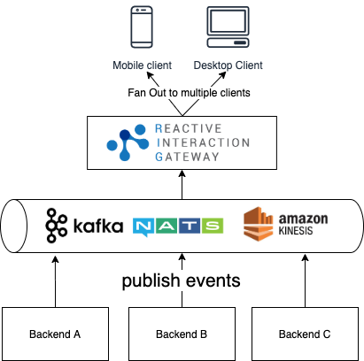
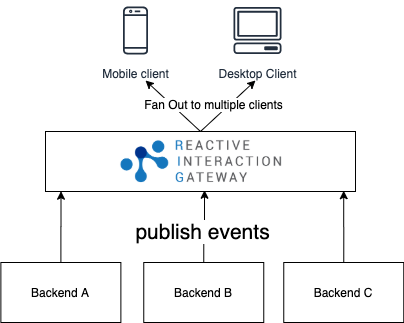
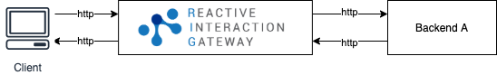
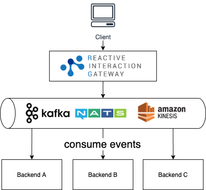
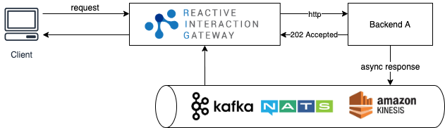
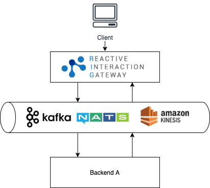

Features
- Picking up backend events and forwarding them to clients based on subscriptions
- Forwarding client requests to backend services
- Out-of-the-box Features
RIG can be used in different scenarios.
Picking up backend events and forwarding them to clients based on subscriptions
Asynchronously
RIG acts as a fan-out publisher of backend events. Clients can simply subscribe to RIG in order to receive these events. This makes your frontend apps reactive and eliminates the need for polling.
Additionally clients can provide filters during the subscription initialization and tell RIG in what type of events it is interested in. Those filters allow clients to tap into high-volume event streams without getting overwhelmed by unwanted events. In other words, filters enable bandwidth efficiency.
The concert example use case describes one advantage of this reactive architectural approach. Check out the Intro for a detailed description and architecture diagram. Basically it works like this:

Synchronously
With RIG, you don't have to necessarily deploy and manage Kafka/Nats/Kinesis. In the previous architecture you can simply remove that part and publish events from the backend directly to RIG. RIG then acts as a simple message broker:

Forwarding client requests to backend services
When client requests need to be forwarded to the backend, clients sometimes are interested in the response of the backend, and sometimes not. Especially when the client is interested in the direct response of the backend, there are a couple of options how to design that technically.
Synchronously
If requests are being sent synchronously, RIG acts as a reverse proxy: RIG forwards the request to an HTTP endpoint of a backend service, waits for the response and sends it back to the client. It is as simple as

You may ask: Why shouldn't I directly talk to the backend? What benefits does RIG provide?
RIG provides many additional features on top like session management or JWT signature verification. You don't have to implement this over and over again at the clients and backend services. That said, it's perfectly fine to run RIG alongside an existing API management gateway, too.
Asynchronously - Fire&Forget
RIG transforms a HTTP request to a message for asynchronous processing and forwards it to the backend asynchronously using either Kafka, NATS or Amazon Kinesis.

This enables asynchonous communication between client-side applications and the backend. RIG acts as a bridge between its clients and the messaging system. Similar to above, the authenticity of client requests are validated using JWT signature verification. RIG effectively replaces a custom backend application that would accept client requests and forward them to Kafka, Nats or Kinesis. This additional backend app is a single point of failure, hence it would be necessary to harden it and make it highly available and reliable. With RIG, you don't have to take care of that - RIG is scalable by design.
Synchronously - Asnychronous Response
RIG forwards the client request to the backend synchronously via HTTP and waits for the backend response by listening to Kafka/NATS and forwarding it to the still open HTTP connection to the frontend.

This scenario can be quite useful which is described in more detail in the Architecture section. RIG correlates the corresponding answer using the correlation ID of the original request, that will be forwarded to the backend and also being used in the response of the backend. With this ID, RIG can filter the appropriate message from the consuming topic.
As you can see in the architecture diagram, the backend service responds to RIG with 202 Accepted to tell RIG that the response will be provided asynchronously.
Apart from that, the backend service also has the possibility to return a cached response (this will be a 200 OK response with a corresponding http body) or anything else, e.g. a 400 Bad Request. In turn, RIG will not listen to the topic and wait for the response. Consequently, the request flow will look similar to the synchronous approach.
Asynchronously - Asnychronous Response
RIG forwards the client request to the backend asynchronously via Kafka or NATS and waits for the backend response by listening to Kafka/NATS and forwarding it to the still open HTTP connection to the frontend.

Essentially this is a combination of the asynchronous - fire&forget approach and the synchronous - asynchronous response approach.
Out-of-the-box Features
Built on open standards, RIG is very easy to integrate – and easy to replace – which means low-cost, low-risk adoption. Unlike other solutions, RIG does not leak into your application – no libraries or SDKs required. Along with handling client requests and publishing events from backend to the frontend, RIG provides many out-of-the-box features:
- Easy to use and scalable by design:
- Supports tens of thousands stable connections per node even on low-end machines
- Easy to add additional nodes
- Built on the battle-proven Erlang/OTP distribution model
- Only uses in-memory data structures - no external dependencies to configure or scale
- Connect using standard protocols:
- Firewall friendly and future proof using Server-Sent Events (SSE)
- HTML5 standard
- Regular HTTP requests, so no issues with proxy servers or firewalls
- Connection multiplexing with HTTP/2 out of the box
- SSE implementation (browser) keeps track of connection drops and restores the connection automatically
- Polyfills available for older browsers
- WebSocket connections are supported, too
- HTTP long polling for situations where SSE and WS are not supported
- Firewall friendly and future proof using Server-Sent Events (SSE)
- Publish events from various sources:
- Kafka
- NATS
- Amazon Kinesis
- or publish via HTTP
- Convert a HTTP request to a message for asynchronous processing:
- produce to Kafka topic, optionally wait for the result on another Kafka topic
- produce to a NATS topic, optionally using NATS request-response to wait for the result
- produce to Amazon Kinesis
- Uses the CNCF CloudEvents specification
- Takes care of client connection state so you don't have to
- Flexible event subscription model based on event types
- Use existing services for authentication and authorization of users and subscriptions
- JWT signature verification for APIs as a simple authentication check
- Session blacklist with immediate session invalidation